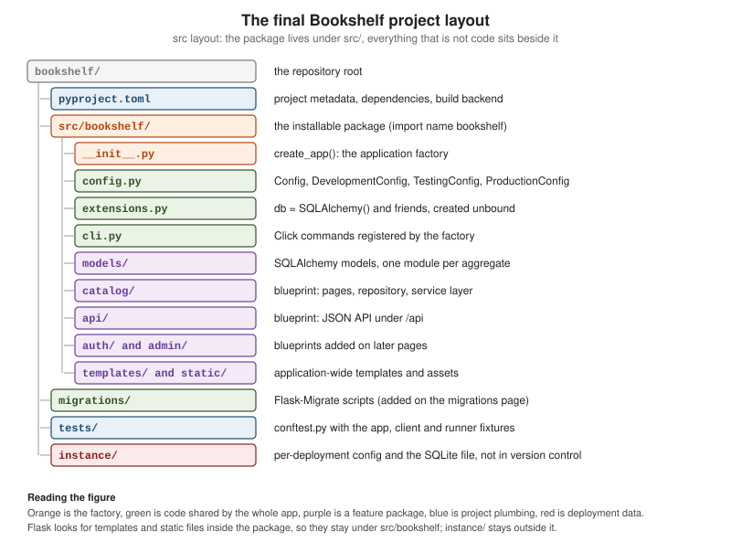

Application Factory & Project Layout
|
This content was generated with the assistance of AI and should be verified against the official documentation before being relied on in production. |
This page is written against Flask 3.1.3 (released 2026-02-18), Werkzeug 3.1.9 and Click 8.5.0, checked on
2026-10-07, and every code block was executed on Python 3.13. Flask 3.2 is not released yet; the changes it lists
that touch this page are described as upcoming. It answers the question every Flask project meets after the first
hundred lines: where does the Flask object live, who creates it, and in which folder does everything else go. The
answer the official documentation gives, and the one the Bookshelf project of this section follows, is an
application factory, a function that builds and returns a fully configured application, inside an installable
package. The final layout of Bookshelf is shown on this page; later pages fill in the blueprints, models and
extensions that the layout leaves room for.
From One Module to a Package
A Flask application can start as a single file, and for a small service that is the right size:
from flask import Flask
app = Flask(__name__)
@app.get("/")
def index():
return {"service": "bookshelf"}
# Flask's test client calls the app without starting a server
response = app.test_client().get("/")
print(response.status_code, response.get_json())
assert response.get_json() == {"service": "bookshelf"}Source: Flask: Quickstart
flask --app hello run finds a module-level app (or application) in hello.py and serves it. This is the shape
every book recipe starts from, and it breaks down in three ways as the project grows:
-
The
appobject exists the moment the module is imported, so configuration has to be known at import time and every other module that doesfrom hello import appis coupled to that one global. -
There is exactly one application per process. A test that needs
TESTING=Trueand an in-memory database, and another test that needs the opposite, fight over the same object. -
Views, models and forms move into other modules, which import
appto register themselves, which imports them back: the circular import that the official documentation admits is "a bad idea in general".
The official documentation describes three stages, summarised here with the trade-offs:
| Layout | Shape | Limits |
|---|---|---|
Single module |
|
One file, one global application. Fine for a prototype or a very small service. |
Package with a global |
A folder with |
Circular imports that happen to work; still one global application and import-time configuration. |
Package with an application factory |
|
A little more ceremony. This is what the tutorial, the patterns documentation and this section use. |
In the second layout the Flask object is created in __init__.py before the view module is imported, which is
why the import sits at the bottom of the file and why the documentation calls the cycle harmless. It only stays
harmless while nothing in the package needs the application at import time. The factory removes the problem rather
than managing it.
The Application Factory
An application factory is a function that creates the application, configures it, registers everything on it and returns it. Nothing is created at import time, so the function can be called as often as needed, with different arguments.
from flask import Flask, current_app
def create_app(test_config=None):
app = Flask(__name__)
app.config.from_mapping(GREETING="hello")
if test_config is not None:
app.config.from_mapping(test_config)
@app.get("/greeting")
def greeting():
return current_app.config["GREETING"]
return app
english = create_app()
spanish = create_app({"GREETING": "hola"})
assert english.test_client().get("/greeting").text == "hello"
assert spanish.test_client().get("/greeting").text == "hola"
assert english is not spanish
assert english.config["GREETING"] == "hello" # the second app did not touch the firstSource: Flask: Application Factories
The official documentation gives two reasons for the pattern, and both are visible above:
-
Testing. Each test builds an application with exactly the settings it needs.
-
Multiple instances. Several differently configured copies of the same application can live in one process, which is how application dispatching (below) and per-tenant applications work.
The price is stated in the same page: you cannot use the application object in blueprints at import time. A view
module that did from bookshelf import app would have nothing to import. Inside a request or a CLI command the
current application is available as current_app (a proxy; how it works is covered on the application and request
lifecycle page of this section), and that is what factory-based code uses throughout. Outside any context it
fails loudly:
from flask import current_app
try:
current_app.config
except RuntimeError as error:
print(error)
with english.app_context():
print(current_app.config["GREETING"])Source: Flask: The Application Context
Working outside of application context.
This typically means that you attempted to use functionality that needed
the current application. To solve this, set up an application context
with app.app_context(). See the documentation for more information.
helloEverything the factory does follows one order, shown in the figure: configuration first, because everything after it may read it, then the instance folder, extensions, blueprints and the remaining hooks.
What the factory must not do
-
Do not read the configuration at import time. A module-level
SECRET_KEY = os.environ[...]in a blueprint module runs before the factory has loaded any configuration. Readcurrent_app.configinside functions. -
Do not rely on setup after the first request. Since Flask 2.3, calling a setup method (
@app.get(...),register_blueprint,before_requestand the like) on an application that has already handled a request raises anAssertionError; for blueprints, setup after registration is an error too. Do all registration inside the factory. -
Do not look for
before_first_request. It was deprecated in 2.2 and removed in 2.3. Older recipes that use it did one-time setup lazily on the first request; with a factory that setup is simply code increate_app, which runs once per application. -
Do not make the factory slow or stateful. It runs for every test and for every
flaskcommand, includingflask --help, which loads the app. Open connections lazily, not increate_app.
try:
@english.get("/too-late")
def too_late():
return "never registered"
except AssertionError as error:
print(str(error).splitlines()[0])Source: Flask: Changes (2.2 and 2.3)
The setup method 'get' can no longer be called on the application. It has already handled its first request, any changes will not be applied consistently.Extensions and init_app
Flask extensions follow one rule that makes factories work: the extension object is created unbound, and bound to
an application later with init_app(app). The official documentation says to prefer creating the extension and the
factory so that the extension object does not initially get bound to the application, and the extension guidelines
add two requirements for extension authors: it must support several applications in one process (use current_app,
never self.app) and it must be usable with a factory (provide init_app).
The unbound objects live in their own module, extensions.py, so that models, blueprints and the factory can all
import them without importing each other:
from flask_sqlalchemy import SQLAlchemy
from sqlalchemy.orm import DeclarativeBase
class Base(DeclarativeBase):
pass
db = SQLAlchemy(model_class=Base)An extension of your own follows the same recipe. This one stamps every response with a per-application request
counter. It keeps its state in app.extensions, the dictionary Flask provides "for extensions to store
application-specific state", under a unique key, and reaches the application through current_app:
import itertools
from flask import Flask, current_app, g
class RequestStamp:
def __init__(self, app=None):
if app is not None:
self.init_app(app)
def init_app(self, app):
app.config.setdefault("REQUEST_STAMP_PREFIX", "req")
app.extensions["request_stamp"] = {"counter": itertools.count(1)}
app.before_request(self._assign)
app.after_request(self._add_header)
def _assign(self):
state = current_app.extensions["request_stamp"]
prefix = current_app.config["REQUEST_STAMP_PREFIX"]
g._request_stamp = f"{prefix}-{next(state['counter'])}" # prefixed name: g is shared
def _add_header(self, response):
response.headers["X-Request-Stamp"] = g._request_stamp
return response
stamp = RequestStamp() # created once, bound to any number of apps
def make(prefix):
app = Flask(prefix)
app.config["REQUEST_STAMP_PREFIX"] = prefix
stamp.init_app(app)
@app.get("/")
def index():
return "ok"
return app
one, two = make("one"), make("two")
for app in (one, two, one):
print(app.test_client().get("/").headers["X-Request-Stamp"])one-1
two-1
one-2The counter of one is not shared with two because it lives in app.extensions, not on the extension object.
Three rules from the extension development guide appear in the code: do not store the app on the extension; use
app.extensions with a name nobody else will pick; and prefix anything stored on g (here g._request_stamp)
because g is one shared namespace.
Where Everything Gets Registered
The factory is the single place where the pieces meet. This table is the checklist Bookshelf follows:
| What | How, inside create_app |
Notes |
|---|---|---|
Configuration |
|
First, so everything after can read it. Details on the configuration page of this section. |
Instance folder |
|
Flask never creates it for you. |
Extensions |
|
Objects come from |
Models |
Imported (not called) so the tables are registered on the metadata |
Importing |
Blueprints |
|
Import them inside the factory, after the extensions exist, to avoid import cycles. |
CLI commands |
|
Available from the |
Error handlers, context processors, hooks |
|
Usually registered by the blueprint or extension that owns them. |
WSGI middleware |
|
Wrap |
Services and other collaborators |
Build once, store in |
Views read them through |
The Bookshelf Project Layout
The running example of this section is an installable package in a src layout. This is where it ends up after the
later pages; this page builds the factory, the configuration classes, extensions.py, one model, the catalog and
api blueprints, a CLI group and the tests, and leaves the auth, admin and migrations directories to the pages
that introduce them.

The package is src/bookshelf; everything that is not importable code sits beside it. The files built on this page
follow, in the order the factory uses them. Each listing was assembled into a real project, installed with
pip install -e . and exercised with the test suite shown near the end of the page.
The factory:
import os
from typing import Any
from flask import Flask
from .config import CONFIGS
from .extensions import db
def create_app(
config_name: str = "development",
test_config: dict[str, Any] | None = None,
instance_path: str | None = None,
) -> Flask:
app = Flask(
__name__,
# must be absolute; with a src/ layout Flask would guess src/instance
instance_path=instance_path or os.environ.get("BOOKSHELF_INSTANCE_PATH") or os.path.abspath("instance"),
instance_relative_config=True,
)
# 1. configuration: defaults, then the instance folder, then the environment
app.config.from_object(CONFIGS[config_name])
if test_config is None:
app.config.from_pyfile("config.py", silent=True)
else:
app.config.from_mapping(test_config)
app.config.from_prefixed_env("BOOKSHELF") # BOOKSHELF_SECRET_KEY=... becomes SECRET_KEY
if not app.config["SECRET_KEY"]:
raise RuntimeError("SECRET_KEY is not set: put it in instance/config.py or BOOKSHELF_SECRET_KEY")
# 2. the instance folder must exist before anything writes to it
os.makedirs(app.instance_path, exist_ok=True)
# 3. extensions: bind the objects from extensions.py to this app
db.init_app(app)
# 3b. services: plain objects, built once and kept where current_app can find them
from .catalog.repository import SqlAlchemyBookRepository
from .catalog.services import CatalogService
app.extensions["bookshelf.catalog"] = CatalogService(SqlAlchemyBookRepository(), db.session.commit)
# 4. blueprints (imported here, once the extensions exist)
from .api import bp as api_bp
from .catalog import bp as catalog_bp
app.register_blueprint(catalog_bp)
app.register_blueprint(api_bp, url_prefix="/api")
# 5. CLI commands, error handlers, context processors
from . import cli
cli.init_app(app)
return appThings worth noticing in it:
-
create_apptakes a configuration name (selecting a class fromconfig.py), an optionaltest_configmapping and an optionalinstance_path. Everything else comes from files and the environment, so the signature stays stable as the project grows. -
Configuration is layered: defaults from a class, then
instance/config.py(or the test mapping), thenBOOKSHELF_*environment variables. Later layers win. The older pairfrom_objectplusfrom_envvar("BOOKSHELF_SETTINGS")(the environment variable names a settings file) from the configuration documentation does the same job;from_pyfileon the instance folder is the variant used here because the folder is where per-deployment files belong. -
The factory refuses to start without a
SECRET_KEY. Failing at start is better than signing sessions withNoneor, worse, with a value copied from a tutorial. -
Blueprints are imported inside the function. Importing them at the top would still work here, but importing inside keeps
bookshelf/__init__.pyfree of import cycles when blueprints import models and extensions. -
from . import cliandcli.init_app(app)keep CLI code in its own module.
The configuration classes, one per environment. They use plain classes, which from_object reads without
instantiating them; only upper-case attributes become configuration keys:
import secrets
class Config:
TESTING = False
SQLALCHEMY_DATABASE_URI = "sqlite:///bookshelf.sqlite" # relative to the instance folder
SECRET_KEY = None # never committed: the instance config or FLASK_SECRET_KEY supplies it
class DevelopmentConfig(Config):
# a random key per process: fine for a throw-away dev server, sessions just reset on restart
SECRET_KEY = secrets.token_hex()
class TestingConfig(Config):
TESTING = True
SECRET_KEY = secrets.token_hex()
SQLALCHEMY_DATABASE_URI = "sqlite:///:memory:"
class ProductionConfig(Config):
pass
CONFIGS = {
"development": DevelopmentConfig,
"testing": TestingConfig,
"production": ProductionConfig,
}Source: Flask: Configuration Handling
No secret is committed. DevelopmentConfig and TestingConfig generate a random key with secrets.token_hex() each time the
process starts, so the development server and the tests work without any file (a development session does not survive a
restart, which is acceptable);
ProductionConfig has none, so production must supply one. Generate a key with
python -c 'import secrets; print(secrets.token_hex())' and put it in instance/config.py or in
BOOKSHELF_SECRET_KEY. One caution about from_prefixed_env: values are parsed as JSON when possible, so a key made
only of digits would become an integer. A hexadecimal key from token_hex() almost never is, but a key you invent
could be.
The blueprint pattern keeps each feature in one package: its blueprint object, its views, its templates, its forms
and its service (a feature that owns its models keeps them in the package too; Bookshelf keeps shared models in models/). Blueprints themselves get the Blueprints page of this section; for the layout it is enough to see the shape.
from flask import Blueprint
bp = Blueprint("catalog", __name__, template_folder="templates")
from . import routes # noqa: E402,F401 (registers the views on bp)The from . import routes line at the bottom of the package is the "import the views after the object exists"
rule again, now scoped to a blueprint, which is the only place where a cycle remains and is harmless. The module
that holds the views:
from flask import current_app, render_template
from . import bp
from .services import CatalogService
def service() -> CatalogService:
return current_app.extensions["bookshelf.catalog"]
@bp.get("/")
def index():
return render_template("catalog/index.html", titles=service().titles())The template it renders sits inside the blueprint’s own templates/ folder, in a subfolder named after the blueprint so
that template names such as catalog/index.html cannot collide with another blueprint’s:
<!doctype html>
<title>Bookshelf</title>
<h1>Bookshelf</h1>
<ul>
{% for title in titles %} <li>{{ title }}</li>
{% endfor %}</ul>The JSON API is a second blueprint mounted under /api when it is registered, not when it is defined, so the same
blueprint could be mounted twice with different prefixes:
from flask import Blueprint, current_app, jsonify, request
from ..catalog.services import CatalogService, DuplicateBook
bp = Blueprint("api", __name__)
def service() -> CatalogService:
return current_app.extensions["bookshelf.catalog"]
@bp.get("/books")
def list_books():
return jsonify(titles=service().titles())
@bp.post("/books")
def create_book():
data = request.get_json()
try:
book = service().register(data["title"], data["author"])
except DuplicateBook:
return jsonify(error="duplicate title"), 409
except (KeyError, ValueError) as error:
return jsonify(error=str(error)), 422
return jsonify(id=book.id, title=book.title), 201The model, with the SQLAlchemy 2.0 style (Mapped and mapped_column) rather than untyped db.Column
declarations. The data-access pages cover models in depth; here one is enough to show where models live:
from .book import Book
__all__ = ["Book"]from sqlalchemy.orm import Mapped, mapped_column
from ..extensions import db
class Book(db.Model):
id: Mapped[int] = mapped_column(primary_key=True)
title: Mapped[str] = mapped_column(unique=True)
author: Mapped[str]Source: Flask-SQLAlchemy: Quick Start
The base class and db are created in extensions.py (above), so models/book.py imports db from there and never
imports the factory. That one-directional import is what keeps models, blueprints and the factory from forming a
cycle:
Finally the CLI group, covered in its own section below:
import click
from flask import Flask
from flask.cli import AppGroup
from .extensions import db
books_cli = AppGroup("books", help="Manage the catalogue.")
@books_cli.command("init-db")
def init_db() -> None:
"""Create the tables."""
db.create_all()
click.echo("Initialised the database.")
def init_app(app: Flask) -> None:
app.cli.add_command(books_cli)What the Flask Constructor Controls
The factory’s first line decides the paths of the whole application. The constructor’s parameters, as defined in Flask 3.1, are:
| Parameter | Default | Meaning |
|---|---|---|
|
required |
Usually |
|
|
URL prefix of the static route. Defaults to |
|
|
Folder served by the static route, relative to |
|
|
Host for the static route; needs |
|
|
Match rules on host and path, not only on path. |
|
|
Match rules against the subdomain relative to |
|
|
Folder of Jinja templates, relative to |
|
|
Absolute path of the instance folder. When omitted Flask detects it (see below). A relative path raises
|
|
|
When |
|
|
Override of the folder the application’s resources are found in. Rarely needed. |
Source: Flask: API, the Flask class
Both the static folder and the templates folder resolve against the package that import_name points to. That is why,
in a package layout, static/ and templates/ live inside src/bookshelf/ and not at the repository root. A
blueprint can have its own template_folder and static_folder, as catalog does for its templates.
The Instance Folder
The instance folder is the directory for things that belong to one deployment and not to the code: a config.py with
real secrets, a SQLite file, uploaded files, anything written at run time. The documentation describes it as
designed to be outside version control and deployment specific. Flask offers it through three members:
-
app.instance_path, the absolute path. -
instance_relative_config=Trueon the constructor, which makesconfig.from_pyfile("config.py")look inside it. -
app.open_instance_resource(name, mode="rb", encoding="utf-8"), which opens a file in it, also for writing.
Flask does not create the folder. The tutorial’s factory calls os.makedirs(app.instance_path, exist_ok=True), and so
does Bookshelf.
import pathlib
import secrets
import tempfile
from flask import Flask
demo_key = secrets.token_hex() # generated for this run; a deployment writes its own key into instance/config.py
root = pathlib.Path(tempfile.mkdtemp())
instance = root / "instance"
app = Flask("bookshelf_demo", instance_path=str(instance), instance_relative_config=True)
assert app.instance_path == str(instance)
# the file does not exist yet: silent=True makes from_pyfile return False instead of raising
assert app.config.from_pyfile("config.py", silent=True) is False
instance.mkdir()
with app.open_instance_resource("config.py", "w") as handle:
handle.write(f"SECRET_KEY = {demo_key!r}\nPAGE_SIZE = 20\n")
assert app.config.from_pyfile("config.py") is True
assert app.config["SECRET_KEY"] == demo_key
print(app.config["PAGE_SIZE"], len(app.config["SECRET_KEY"]))
try:
Flask("bookshelf_demo", instance_path="relative/path")
except ValueError as error:
print(error)20 64
If an instance path is provided it must be absolute. A relative path was given instead.When instance_path is not given, Flask guesses. The documentation lists the defaults, and the implementation in
Flask 3.1 confirms them:
| How the code is installed | Default instance folder |
|---|---|
Uninstalled module ( |
|
Uninstalled package |
|
Installed into a virtual environment or the system |
|
Two traps follow from that:
-
The
srclayout. The guess for an editable install ofsrc/bookshelfissrc/instance, next to the package, notinstance/at the repository root. Runningcreate_app()on the Bookshelf layout without an explicitinstance_pathcreatessrc/instance, which is not where the.gitignoreentry, the Docker volume or the deployment script expects it. Bookshelf therefore passes an explicit absolute path: the argument, orBOOKSHELF_INSTANCE_PATH, orinstance/in the working directory. -
A wheel install. Once the package is installed (not editable) the default moves to
$PREFIX/var/bookshelf-instance, so a configuration that worked from a checkout silently stops findingconfig.py. Always set the path explicitly for deployments (an environment variable is the usual mechanism).
Two more facts connect the instance folder to other pages. Flask-SQLAlchemy resolves a relative SQLite file such as
sqlite:///bookshelf.sqlite against the application’s instance path rather than the working directory, which is why
the Bookshelf database lands in instance/bookshelf.sqlite. And the folder must stay out of version control:
# .gitignore
instance/
*.sqlite
.envThe factory test of the earlier section already uses the mechanism the other way round: tests pass a fresh
temporary directory as instance_path, so no test ever touches the real instance folder.
Packaging: pyproject.toml and pip install -e .
The books of this section’s bibliography make their project installable with a setup.py (python setup.py install)
and a virtualenvwrapper environment. Both are legacy: the official documentation (the "Large Applications as
Packages" pattern and the tutorial) uses a pyproject.toml, and Flask itself moved its own build to the flit_core
backend in 2.3.3. Bookshelf’s project file:
[project]
name = "bookshelf"
version = "0.1.0"
description = "Bookshelf: the running example of the Flask section."
requires-python = ">=3.10"
dependencies = [
"flask>=3.1",
"flask-sqlalchemy>=3.1",
]
[project.optional-dependencies]
test = ["pytest"]
[build-system]
requires = ["flit_core<4"]
build-backend = "flit_core.buildapi"python -m venv .venv
source .venv/bin/activate # Windows PowerShell: .venv\Scripts\Activate.ps1
pip install -e ".[test]" # editable install of the project plus the test extra
# or with uv, which creates and manages the environment for you
uv venv && uv pip install -e ".[test]"What installing buys you, in the words of the tutorial: Python and Flask understand the package no matter which
directory you run from; dependencies are managed like any other package’s; and test tools can isolate the test
environment from the development one. Editable mode (-e) means source changes take effect without reinstalling;
reinstall only when the metadata (dependencies, entry points) changes. Virtual environments and the other packaging
tools (setuptools, hatchling, uv projects) are covered in
Virtual Environments & Packaging and not
repeated here; any PEP 517 backend works, flit_core is simply what the Flask documentation uses.
Package data needs no extra configuration with flit_core: it includes the files inside the package directory,
which is why the catalog/templates/catalog/index.html template and static/ travel in the wheel. With other
backends, check that non-Python files are included, or the first deployment fails with TemplateNotFound.
A src layout (importable code under src/, as here) versus a flat layout (the package next to pyproject.toml)
is a packaging decision rather than a Flask one. The src layout prevents tests from accidentally importing the
checkout instead of the installed package; the cost is the instance-path trap above. The Python Packaging User Guide
compares them.
Running a Factory from the Command Line
The flask command is installed by Flask, not by your application, so it has to be told how to find the app. The
--app option (short -A) takes up to three parts: an optional path that becomes the working directory, a Python
file or dotted import path, and an optional variable or factory name, which can be followed by arguments in
parentheses:
| Command | What happens |
|---|---|
|
Imports |
|
Imports |
|
Changes the working directory to |
|
Imports the dotted path |
|
Uses the instance |
|
Calls |
Because the Bookshelf factory has defaults for all of its parameters, auto-detection works, and keyword arguments
select another configuration. The following block builds a throwaway module and drives the real flask command:
import pathlib
import subprocess
import sys
import tempfile
work = pathlib.Path(tempfile.mkdtemp())
(work / "hello.py").write_text(
"from flask import Flask\n"
"\n"
"def make_app(greeting='hello'):\n"
" app = Flask(__name__)\n"
"\n"
" @app.get('/')\n"
" def index():\n"
" return greeting\n"
"\n"
" return app\n"
)
(work / "needs_arg.py").write_text(
"from flask import Flask\n\ndef create_app(name):\n return Flask(name)\n"
)
def flask(*args):
result = subprocess.run([sys.executable, "-m", "flask", *args], cwd=work, capture_output=True, text=True)
return result.returncode, (result.stdout + result.stderr).strip()
code, output = flask("--app", "hello", "routes") # make_app found and called without arguments
assert code == 0 and "index" in output
print(output)
code, output = flask("--app", "hello:make_app(greeting='hi')", "routes") # arguments as literals
assert code == 0
code, output = flask("--app", "needs_arg", "routes") # a required argument cannot be guessed
assert code != 0
print(output.splitlines()[-1])
code, output = flask("--app", "hello:make_app(greeting=len)", "routes") # not a literal
assert code != 0
print(output.splitlines()[-1])Source: Flask: Command Line Interface
Endpoint Methods Rule
-------- ------- -----------------------
index GET /
static GET /static/<path:filename>
Error: Detected factory 'create_app' in module 'needs_arg', but could not call it without arguments. Use 'needs_arg:create_app(args)' to specify arguments.
Error: Failed to parse arguments as literal values: 'make_app(greeting=len)'.Practical consequences:
-
Name the factory
create_appormake_app, give every parameter a default, and--app bookshelfjust works. -
A factory with a required argument must be called with arguments in
--app. The error message says so. -
Setting
FLASK_APPin the environment is still supported, and.flaskenv(committed, public values such asFLASK_APP=bookshelf) plus.env(not committed, private values) load automatically when python-dotenv is installed. The documented form isflask --app <module> run --debug, available since Flask 2.2. -
FLASK_ENV,ENVandapp.envwere deprecated in 2.2 and removed in 2.3; books that putFLASK_ENV=developmentin a.flaskenvfile or a Dockerfile no longer get development behaviour. Use--debugorFLASK_DEBUG=1. -
--eager-loadingand--lazy-loadingwere removed fromflask runin 2.2.
Custom commands
Commands registered on app.cli are discovered with the application, and a command defined with the app.cli or
AppGroup decorators already runs inside an application context since Flask 2.2, so @with_appcontext is no longer
needed on them (the older recipes in the books add it). The books group from cli.py is used like this:
flask --app bookshelf books init-dbInitialised the database.A blueprint can carry its own commands with bp.cli; they appear as a group named after the blueprint unless
cli_group says otherwise (cli_group=None merges them into the top level). Extensions can ship commands that appear as
soon as they are installed, through the flask.commands entry point group in their pyproject.toml.
A custom script instead of --app
When there is only one way to build the application, a project can ship its own console script that wraps the factory
with FlaskGroup, so users never type --app:
import click
from click.testing import CliRunner
from flask import Flask
from flask.cli import FlaskGroup
def create_wiki():
app = Flask("wiki")
@app.cli.command("hello")
def hello():
click.echo("hello from the wiki app")
return app
@click.group(cls=FlaskGroup, create_app=create_wiki)
def cli():
"""Management script for the wiki application."""
result = CliRunner().invoke(cli, ["hello"])
assert result.exit_code == 0, result.output
print(result.output.strip())hello from the wiki appThe script is published as a console script in pyproject.toml (a [project.scripts] entry such as
wiki = "wiki:cli"). The official warning applies: an error in module-level code breaks the reloader of a custom script,
while the plain flask command, being separate from your code, does not have that problem, so it is recommended for
most projects.
Application Dispatching
Blueprints split one application. Application dispatching does the opposite: it combines several entirely separate
WSGI applications, each with its own configuration, in one process, by routing on the path or the host at the WSGI level.
The applications need not even be Flask apps; the documentation mentions running Django and Flask side by side.
Werkzeug provides DispatcherMiddleware, which sends a request to the application mounted under a path prefix and to a
default application otherwise:
from flask import Flask, request, url_for
from werkzeug.middleware.dispatcher import DispatcherMiddleware
from werkzeug.middleware.proxy_fix import ProxyFix
from werkzeug.test import Client
def make(name):
app = Flask(name)
@app.get("/ping")
def ping():
return {
"app": name,
"path": request.path,
"script_root": request.script_root,
"url": url_for("ping"),
}
return app
public, admin = make("public"), make("admin")
# middleware wraps wsgi_app, not the app, so the Flask object keeps its methods
public.wsgi_app = ProxyFix(public.wsgi_app, x_proto=1, x_host=1) # only behind a proxy you control
combined = DispatcherMiddleware(public, {"/admin": admin})
client = Client(combined)
print(client.get("/ping").get_json())
print(client.get("/admin/ping").get_json())Source: Flask: Application Dispatching
{'app': 'public', 'path': '/ping', 'script_root': '', 'url': '/ping'}
{'app': 'admin', 'path': '/ping', 'script_root': '/admin', 'url': '/admin/ping'}The mounted application sees /ping as its path and /admin as its script root, so url_for inside it still produces
URLs that work from the outside. combined is itself a WSGI callable: serve it with any WSGI server
(gunicorn module:combined) instead of pointing the server at one Flask object. The flask run command only finds
Flask applications, so for development the combined object is run with the server of your choice or with
werkzeug.serving.run_simple.
The same documentation page shows two hand-written dispatchers that build applications on demand: one picks the application from the request’s subdomain and one from the first path segment, creating each instance with a factory the first time it is needed and remembering it behind a lock. They are a good fit for multi-tenant deployments and they only work because the application is created by a function.
Choose between blueprints and dispatching by isolation. Blueprints share one configuration, one set of extensions and one error-handling and session setup. Dispatched applications share nothing: separate secret keys, separate extension state, and a failure of one does not corrupt the other’s configuration. Dispatching costs one application object (and its memory) per mount, and sessions do not carry across mounts unless they use the same key and cookie settings. Application dispatching is a mechanism at the WSGI layer and is separate from the ASGI sub-applications that FastAPI mounts.
Lazily Loading Views
Decorated views have a cost: every module that holds one must be imported up front or Flask never sees the route. For
an application that has to start fast (the documentation names systems such as Google App Engine) the
alternative is a central URL map built with add_url_rule, with the view functions imported only when first called.
The official pattern is a small callable that imports its target on first use:
import pathlib
import sys
import tempfile
from flask import Flask
from werkzeug.utils import cached_property, import_string
views_dir = pathlib.Path(tempfile.mkdtemp())
(views_dir / "bookshelf_views.py").write_text(
"def index():\n"
" return 'catalogue'\n"
"\n"
"def book(book_id):\n"
" return f'book {book_id}'\n"
)
sys.path.insert(0, str(views_dir))
class LazyView:
def __init__(self, import_name):
self.__module__, self.__name__ = import_name.rsplit(".", 1)
self.import_name = import_name
@cached_property
def view(self):
return import_string(self.import_name)
def __call__(self, *args, **kwargs):
return self.view(*args, **kwargs)
app = Flask("lazy_demo")
app.add_url_rule("/", view_func=LazyView("bookshelf_views.index"))
app.add_url_rule("/books/<int:book_id>", view_func=LazyView("bookshelf_views.book"))
assert "bookshelf_views" not in sys.modules # nothing imported at registration time
client = app.test_client()
assert client.get("/").text == "catalogue"
assert "bookshelf_views" in sys.modules # imported by the first request
assert client.get("/books/7").text == "book 7"
assert [rule.endpoint for rule in app.url_map.iter_rules()][:2] == ["static", "index"]Source: Flask: Lazily Loading Views
The class sets __module__ and __name__ because Flask derives the endpoint name from the view function’s name when
no endpoint is given. As the documentation warns, before_request and after_request handlers and every other
decorator-based registration must still sit in a module that is imported up front, because only the views are lazy. For
most applications this pattern is unnecessary: blueprints already give a central place where routes are collected, and
import cost is rarely the bottleneck compared with the database and the network. Reach for it when start-up time is
measured, not guessed.
Layered and Hexagonal Structure
The factory and the blueprints decide where Flask code lives; they do not decide where business rules live. A view that validates, queries the database and builds the response is easy to write and hard to test, because every test needs a running application and a database. The structure used by the architecture-minded books (the hexagonal or ports-and-adapters layout, the repository and the service layer) separates three concerns:
| Layer | In Bookshelf | Knows about |
|---|---|---|
Web (the inbound adapter) |
|
Flask and the service layer. Not SQL. |
Service layer (use cases) |
|
The repository port. Neither Flask nor SQLAlchemy. |
Persistence (the outbound adapter) |
|
SQLAlchemy and the models. |
The repository is the port, written as a typing.Protocol so any object with the right methods satisfies it without
inheriting from anything. The SQLAlchemy adapter uses the 2.0 query style through db.session and db.select; the
legacy Model.query interface that most of the book recipes use is not needed, and neither is the book’s
sqlalchemy.ext.declarative.declarative_base, which DeclarativeBase replaced in SQLAlchemy 2.0.
from typing import Protocol
from ..extensions import db
from ..models import Book
class BookRepository(Protocol):
def add(self, title: str, author: str) -> Book: ...
def list_all(self) -> list[Book]: ...
class SqlAlchemyBookRepository:
def add(self, title: str, author: str) -> Book:
book = Book(title=title, author=author)
db.session.add(book)
return book
def list_all(self) -> list[Book]:
return list(db.session.scalars(db.select(Book).order_by(Book.title)))Source: Flask-SQLAlchemy: Quick Start
The service holds the rules and receives its collaborators as constructor arguments. The second one, commit, is the
unit of work reduced to its essence: the service decides when a transaction is complete and the caller decides what
"commit" means. In production it is db.session.commit, and a Flask-SQLAlchemy session already behaves as a unit of
work (changes are collected and flushed together), so a hand-written unit-of-work class is only worth its weight when
more than one store takes part in the same transaction.
from .repository import BookRepository
class DuplicateBook(Exception):
pass
class CatalogService:
def __init__(self, books: BookRepository, commit) -> None:
self._books = books
self._commit = commit # the unit of work: db.session.commit in production
def register(self, title: str, author: str):
title = title.strip()
if not title:
raise ValueError("title must not be empty")
if any(b.title == title for b in self._books.list_all()):
raise DuplicateBook(title)
book = self._books.add(title, author.strip())
self._commit()
return book
def titles(self) -> list[str]:
return [b.title for b in self._books.list_all()]Dependency injection in Flask is deliberately plain. The factory builds the service once, with the real repository, and
stores it where current_app can reach it (this was line app.extensions["bookshelf.catalog"] = ... in the factory);
the view fetches it with a one-line helper. There is no container to configure, and tests can replace the entry:
import pytest
from bookshelf.catalog.services import CatalogService, DuplicateBook
class FakeBook:
def __init__(self, title: str, author: str) -> None:
self.title, self.author = title, author
class InMemoryBookRepository:
def __init__(self) -> None:
self._books: list[FakeBook] = []
def add(self, title: str, author: str) -> FakeBook:
book = FakeBook(title, author)
self._books.append(book)
return book
def list_all(self) -> list[FakeBook]:
return sorted(self._books, key=lambda b: b.title)
def make_service() -> tuple[CatalogService, list[int]]:
commits: list[int] = []
return CatalogService(InMemoryBookRepository(), lambda: commits.append(1)), commits
def test_register_commits_once():
service, commits = make_service()
service.register(" Dune ", "Frank Herbert")
assert service.titles() == ["Dune"]
assert commits == [1]
def test_duplicates_and_blank_titles_are_rejected():
service, _ = make_service()
service.register("Dune", "Frank Herbert")
with pytest.raises(DuplicateBook):
service.register("Dune", "Someone Else")
with pytest.raises(ValueError):
service.register(" ", "Nobody")The tests above run without Flask, without a database and in milliseconds, because the service depends on a protocol and
the fake satisfies it. The same service object serves the HTML page in catalog/routes.py and the JSON API in
api/__init__.py: two inbound adapters, one set of rules. Alembic autogeneration and the migration workflow that the
architecture books describe belong with the models; they are covered on the database migrations page of this section.
How far to take this is a judgement call. For a CRUD service with one table the extra layer adds files without adding
safety, and the views can talk to db.session directly. The layers pay off when business rules exist that are not
"insert this row", when more than one adapter (HTML, JSON, CLI, a Celery job) needs the same rules, or when tests become slow.
Microservice boundaries
The microservice design book in the bibliography contributes three ideas that decide where a Flask project is cut in
the first place. A service owns its data (database per service) and other services reach it through its API, never
through its tables. Services stay loosely coupled when they share contracts and not code. And the cut itself follows the
business, either by business capability (catalogue, reviews, accounts) or by subdomain in the domain-driven sense. Each
Bookshelf blueprint is shaped like a future service: its own models, its own service layer, and an api surface the others
use. If a blueprint is later extracted, the boundary already exists. These design topics are covered once on this site
and not repeated per framework:
Strategic Design for Microservices for subdomains,
bounded contexts and database per service,
Structuring a DDD Microservice’s Code for
transaction scripts, application services and ports and adapters, and
Repositories, Factories, and Domain Services
for the repository itself (the Java code there maps one-to-one onto the Python shown above). The section index,
Architectural Patterns, lists the rest.
Testing the Factory
The reason for the factory is easiest to see in the tests. A fixture builds an application per test with a throwaway
instance folder, an in-memory database and TESTING=True, and hands out the test client and the CLI runner:
import pytest
from bookshelf import create_app
from bookshelf.extensions import db
@pytest.fixture()
def app(tmp_path):
app = create_app("testing", test_config={"TESTING": True}, instance_path=str(tmp_path))
with app.app_context():
db.create_all()
yield app
@pytest.fixture()
def client(app):
return app.test_client()
@pytest.fixture()
def runner(app):
return app.test_cli_runner()def test_empty_catalogue(client):
response = client.get("/api/books")
assert response.status_code == 200
assert response.json == {"titles": []}
def test_create_and_list(client):
created = client.post("/api/books", json={"title": "Dune", "author": "Frank Herbert"})
assert created.status_code == 201
assert client.get("/api/books").json == {"titles": ["Dune"]}
assert client.get("/").text.count("<li>") == 1
def test_duplicate_is_rejected(client):
payload = {"title": "Dune", "author": "Frank Herbert"}
client.post("/api/books", json=payload)
assert client.post("/api/books", json=payload).status_code == 409
def test_cli_command(runner):
result = runner.invoke(args=["books", "init-db"])
assert "Initialised" in result.outputimport pytest
from bookshelf import create_app
def test_two_apps_do_not_share_state(tmp_path):
first = create_app("testing", instance_path=str(tmp_path / "a"))
second = create_app("testing", test_config={"TESTING": True, "GREETING": "hola"}, instance_path=str(tmp_path / "b"))
assert "GREETING" not in first.config
assert second.config["GREETING"] == "hola"
assert first.instance_path != second.instance_path
def test_production_needs_a_secret_key(tmp_path, monkeypatch):
monkeypatch.delenv("BOOKSHELF_SECRET_KEY", raising=False)
with pytest.raises(RuntimeError):
create_app("production", instance_path=str(tmp_path))
monkeypatch.setenv("BOOKSHELF_SECRET_KEY", "0123abcd" * 8)
assert create_app("production", instance_path=str(tmp_path)).config["SECRET_KEY"] == "0123abcd" * 8Source: Flask: Tutorial, Test Coverage
Run them with pytest from the project root. A few points that differ from older recipes:
-
pytest, not nose or nose2. The 2019 edition of the cookbook uses nose, which is unmaintained; the 2023 edition uses nose2, which is rarely used. The Flask documentation and tutorial use pytest with fixtures. Plain
unittestclasses still work if you build the app insetUp. -
.jsonis a property. The test client’s response hasresponse.json, notresponse.json(), and its body isresponse.textorresponse.data, notresponse.content; those belong to therequestslibrary, which a unit test should not need because the test client calls the application in-process. -
Isolation. The fixtures create a new application and a new in-memory database for every test (Flask-SQLAlchemy uses a static pool for
sqlite:///:memory:so every connection sees the same database). Tests that share one globalappleak state into each other. -
Mocking.
unittest.mock.patchworks on the objects views call; because the service is stored inapp.extensions, a test can also replace that entry with a fake instead of patching import paths. -
Coverage and profiling (Werkzeug’s
ProfilerMiddleware) are tools you attach to the same factory; the testing and debugging pages of this section cover them.
Security Notes
-
Secrets stay out of the repository. The factory requires a
SECRET_KEYand gets it frominstance/config.pyor the environment; the only keys in the repository are obviously fake and live in the development and test classes. The books show a placeholder string as thesecret_keyand cloud keys inline; do not reproduce either. -
The instance folder is data, not code. Keep it outside the web server’s document root and out of version control and Docker images; mount it as a volume or generate it on start.
-
Never run the development server or the debugger in production.
flask run,app.run(debug=True)and the interactive debugger are for development. The books runpython app.pyinside a container; production uses a WSGI server such as Gunicorn or Waitress, covered on the deployment page. -
Dispatching shares a process. Mounted applications are isolated by configuration, not by the operating system; a crash or memory leak affects all of them. Mount only what you trust to share a process.
-
Wrap
wsgi_appand trust proxy headers deliberately.ProxyFixmakes the application believeX-Forwarded-*headers, so only enable the hops that your proxy sets and that a client cannot forge. -
Fail at start, not at first request. A factory that validates required configuration (as Bookshelf does for the secret key) turns a silent security gap into a startup error.
Source: Flask: Security Considerations
The Same Job in Other Frameworks
Every framework has to answer "where is the application object built and how are features grouped". Flask’s answer is the most explicit: you write the function.
| Framework | Application object and configuration | Grouping features |
|---|---|---|
Flask |
|
Blueprints registered by the factory; extensions bound with |
FastAPI |
A module-level |
|
Django |
A project with a settings module chosen by an environment variable, and a |
Apps listed in the settings, each with its own models, views and URL configuration. |
Quart, Tornado, Pyramid |
Quart mirrors Flask’s factory and blueprint model on ASGI; Tornado and Pyramid have their own application and configurator objects, described in the Tornado and Pyramid sections of this site. |
Quart: blueprints. Tornado: handler lists. Pyramid: configurator |
Source: Flask: Design Decisions in Flask
Recent and Upcoming Changes
| Version | Change that touches this page |
|---|---|
2.2 |
|
2.3 |
|
2.3.3 |
Flask’s own build moves to |
3.0 |
Previously deprecated code removed; |
3.1 |
|
3.2 (not released) |
Requires Python 3.10 or later. The unreleased changelog describes the application and request contexts being merged
( |
Source: Flask: Changes
Where the Books Are Outdated
The books in the bibliography are used for the concept narrative only; nothing here is copied from them. Where their recipes touch this page, the current approach is:
| In the books | Today |
|---|---|
|
Still works, but the documented form is |
|
Deprecated in 2.2 and removed in 2.3. Use |
|
|
|
A WSGI server (Gunicorn, Waitress, mod_wsgi, uWSGI). Never the development server or debugger in production. |
|
Removed in 2.3. Do the setup in the factory. |
Registering routes or blueprints after the app has served a request |
An |
|
Not needed for |
|
Removed in 2.2. |
|
SQLAlchemy 2.0: |
nose and nose2 test runners |
pytest with fixtures and |
|
|
A hard-coded placeholder string as the |
Generate with |
Compact single-file examples that assume one global |
Fine for prototypes; a factory in an installable package for anything that has tests or more than one blueprint. |